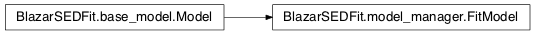

Module: model¶
This module contains all the classes necessary to build a SED model.
A SED model can be built by creating a SEDmodel object.
Classes and Inheritance Structure¶
Classes relations¶

FitModel([elec_distr, jet, name, out_dir, …]) |
This class creates an interface to handle a fit Model. |
Module API¶
-
class
BlazarSEDFit.model_manager.FitModel(elec_distr=None, jet=None, name='no-name', out_dir=None, flag=None, template=None, loglog_poly=None, analytical=None, nu_size=100, **keywords)[source]¶ Bases:
BlazarSEDFit.base_model.ModelThis class creates an interface to handle a fit Model. The relevant class members are
SEDobject storing the SED data points- model_pars, a
par_array_builderobject returned by theSSC_paramconstructor jet_builderobject
Parameters
Parameters: - jet – (
par_array_builderobject) - elec_distr_type – (str) name of the electron distribution model
- template – (
spectral_shapes.templateobject)
Members
Variables: - SED – (
spectral_shapes.SED) object to store the SED data points - model_pars – (
par_array_builderobject)
-
eval(nu=None, fill_SED=True, get_model=False, loglog=False, plot=None, label=None, phys_output=False)[source]¶ evaluates the SED for the current parameters and fills the
SEDmember
-
fit(SEDdata, nu_min, nu_max, fitname=None)[source]¶ shortcut to call
minimizer.fit_SED()Parameters: - SEDdata – SEDdata object
- nu_min – minimun frequency for the fit range interval
- nu_max – maximum frequency for the fit range interval
-
get(par_name, *args)[source]¶ returns the value of a specific keyword for a specific parameter of the parameter array
Parameters: par_name – Note
see the documentation of
par_array_builderfor arguments and keywords
-
get_val(par_name)[source]¶ returns the value of a specific parameter of the parameter array
Parameters: par_name – Note
see the documentation of
par_array_builderfor arguments and keywords